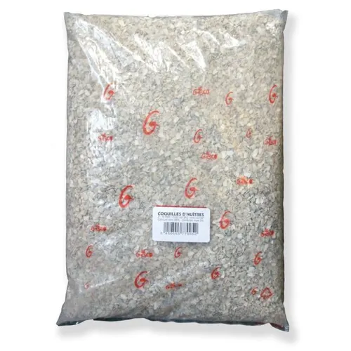
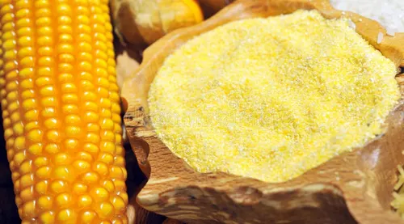
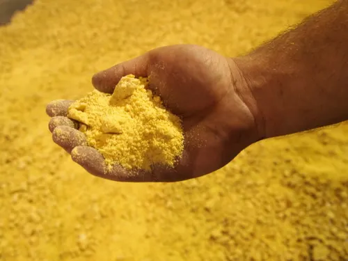
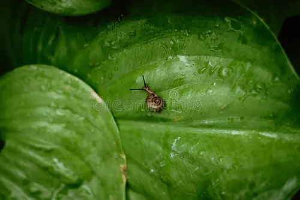
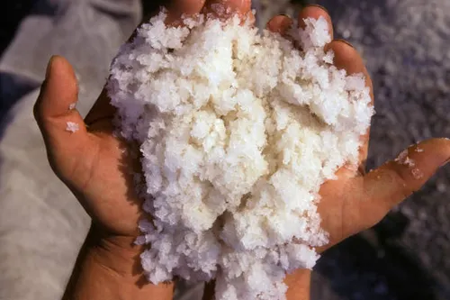
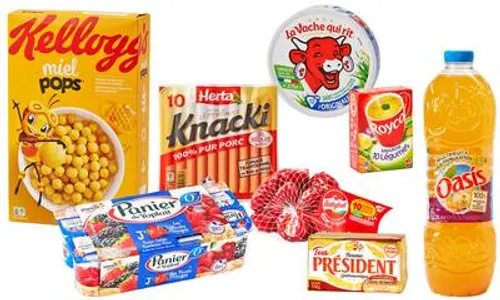
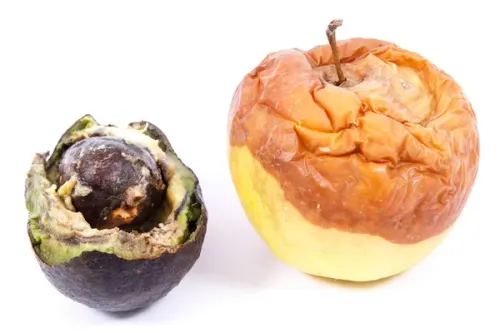

Conditions environnementales
- Humidité stable entre 70–85 %
- Température idéale 20–25°C
- Ventilation maîtrisée
- Absence d’exposition solaire directe
Maîtriser l’alimentation pour accélérer la croissance, renforcer la coquille et maximiser la rentabilité.
Les escargots terrestres sont des mollusques herbivores dotés d’une radula permettant de râper les végétaux. Leur métabolisme dépend fortement du calcium, de l’humidité et d’un apport protéique contrôlé.
Élément central de la formation et de la solidité de la coquille.
30 à 40 % de la matière sècheIndispensables à la croissance musculaire et au développement.
16 à 20 %Optimisent la digestion et régulent l’activité métabolique.
Fibres 10–15 % | Humidité 70–85 %| Élément | Proportion idéale |
|---|---|
| Calcium | 35 % |
| Protéines | 18 % |
| Fibres | 12 % |
| Humidité ambiante | 75 % |








Protéines renforcées et calcium élevé pour croissance rapide et coquille solide.
Ration équilibrée pour stabiliser le poids et renforcer l’immunité.
Apport élevé en calcium et minéraux pour optimiser la ponte.
Une alimentation optimisée augmente directement le rendement et réduit les pertes.
Voir la projection financière